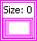

Set Constant
Owning Palette: Set VIs and Functions
Requires: Base Development System
Represents a set on the block diagram.
You cannot modify the embedded data in a set interactively or programmatically. You can update set data only as a whole through operations such as writing to the set front panel terminal or right-clicking the set and selecting Data Operations»Copy Data or Data Operations»Paste Data.

 Add to the block diagram Add to the block diagram |
 Find on the palette Find on the palette |